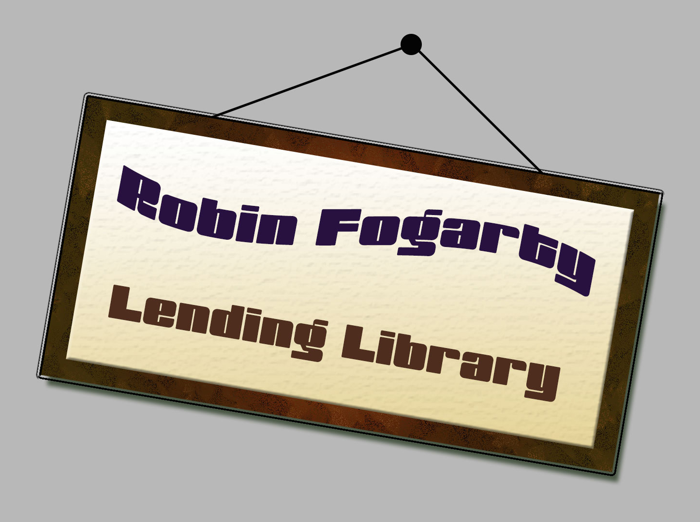
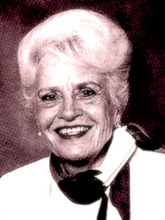

Coles: Moral Intelligence
 Using character development as the basis of intelligence, Coles (1997) takes the position that moral intelligence is a valid theory of intelligence. Coles shows how children can become "smarter" in their inner characters and can learn empathy, respect, and how to live by the golden rule.
Using character development as the basis of intelligence, Coles (1997) takes the position that moral intelligence is a valid theory of intelligence. Coles shows how children can become "smarter" in their inner characters and can learn empathy, respect, and how to live by the golden rule.
He suggests that, through the living example of others and through explicit dialogue about moral issues, children can become more skillful, more thoughtful, and more caring. The theory is founded on how values are born and shaped through the "moral archeology of childhood".
Much like emotional intelligence, a first cousin of this theory, the evidence of Cole's theory at work in the schools is epitomized by the public cry for character education. There are many problems in the social fabric publicized not just once daily on the nightly news but reoccurring on the twenty-four hour news formats.
The public is aware, as never before, of the craziness in society , and they want the schools to handle it. Again, evidence of programs that focus on moral issues are seen in the rising use of case studies and in the ethical issues that arise in the emerging use of problem-based learning units. From the early grades through middle school and into the high school years, attention to social skills and social responsibility is part of the cooperative learning agenda. Character education is prominent on the agenda in the burgeoning curriculum of today's schools.
Diamond: Enriched Environments
In the 1990s, the explosion of research on the brain and learning has brought the pioneering work of neurobiologist of Marian Diamond to the forefront. She describes the growth of dendrites in the brain as "magical trees of the mind."
And she shows a closed hand opening to demonstrate the flowering of the dendrites with stimuli-rich environments. She continues and, as she speaks of an impoverished environment, shows how the dendrites shrivel by slowly closing her hand into a small circle. The influence of this research on enriched environments speaks to the same theory base as constructivism. In both domains, the learner is mindfully managing the input and making sense of things in the ever-changing environment.
- Hallways dripping with printed posters, writings, mobiles, sculptures and paintings;
- Cclassrooms with bean bag chairs, little rugs and fluffy pillows, books, magazines, newspapers and journals; science corners filled with greenery and tanks of fish, gerbil cages, rock collections and classifications charts of sea shells;
- the listening station alive with classical music, pop songs, ballads and the Blues;
- the art center crammed with paint tubes, brushes, clay, sand, beads, constructions paper, scissors, glue and markers;
- the classroom lab stocked with beakers, microscopes, electrical circuitry, chemicals and formaldehyde;
- the computer room with clicking keyboards, graphics software, CD Roms, modems and Internet phones lines buzzing...
- these are the sights and sounds of the enriched environment.
Costa: Intelligent Behaviors
Costa's (1991) theory of intelligent behaviors focuses on fourteen dispositions that comprise what he believes human beings do when they behave intelligently.
Included in Costa's list of intelligent behaviors are persistence, decreasing impulsivity, listening with empathy, cooperative thinking, flexibility, metacognition, accuracy and precision, a sense of humor, questioning and problem-posing, drawing on past knowledge and applying it to new situations, risk-taking, using all the senses, creativity, and efficacy as a thinker.
He suggests that, through the living example of others and through explicit dialogue about moral issues, children can become more skillful, more thoughtful, and more caring. The theory is founded on how values are born and shaped through the "moral archeology of childhood".
Much like emotional intelligence, a first cousin of this theory, the evidence of Cole's theory at work in the schools is epitomized by the public cry for character education. There are many problems in the social fabric publicized not just once daily on the nightly news but reoccurring on the twenty-four hour news formats.
The public is aware, as never before, of the craziness in society , and they want the schools to handle it. Again, evidence of programs that focus on moral issues are seen in the rising use of case studies and in the ethical issues that arise in the emerging use of problem-based learning units.
From the early grades through middle school and into the high school years, attention to social skills and social responsibility is part of the cooperative learning agenda. Character education is prominent on the agenda in the burgeoning curriculum of today's schools.
Dewey: Experiential Learning
 The designs of Dewey (1938) embed learning in experience. In his concept, curriculum and instruction expand far beyond the classroom walls into life experiences. He advocates field studies and immersion in the experience itself to stimulate learning.
The designs of Dewey (1938) embed learning in experience. In his concept, curriculum and instruction expand far beyond the classroom walls into life experiences. He advocates field studies and immersion in the experience itself to stimulate learning.
Dewey's influence is seen in service to the community and in civic projects such as reading to the blind; cleaning up the neighborhood graffiti; or partnering with village agencies to protest the pollution of the nearby river. It is seen as the class sets up a real store to manage consumer products, work with currency, and understand the theory of supply and demand.
The influence of his architectural design is evidenced in outdoor education experiences and field trips to local historic museums and county court houses. Dewey's theory is seen in practice in simulations: an archeological dig in which students simulate a real dig by examining the layers of artifacts found in a classroom wastebasket as they reconstruct the imagined scene.
 The portraits of these architects of the intellect would be incomplete without acknowledging the influence of Reuven Feuerstein (1990). This Israeli psychologist performed ground-breaking work with cognitive modifications with traumatized children of the Holocoust.
The portraits of these architects of the intellect would be incomplete without acknowledging the influence of Reuven Feuerstein (1990). This Israeli psychologist performed ground-breaking work with cognitive modifications with traumatized children of the Holocoust.
As a result of his success through mediated learning experiences (MLE) with these children, Feuerstein has transformed thinking about intelligence and human potential. His theory of cognitive modifiability refutes the concept of a static and unchanging IQ and opens the metacognitive realm of the classroom to intense examination.
Feuerstein believes the "construction of knowledge" requires a teacher's intervention to guide a student's learning. For example, witness a student deeply engaged in a cognitive task of searching for a pattern that connects a seemingly random series of dots, and listen closely to the expert intervention of the teacher/coach. "Why did you do that?" "What were you thinking just now?" "How does this remind you of another problem we did, yesterday?" "Have you a good reason for doing what you did here? Tell me about it."
Then, shift to a less intense classroom scene in which youngsters are asked to think about their teamwork upon completing a large mural depicting the Oregon Trail.
"What were you supposed to do?"
"What did you do well?"
"What might you change if you work together again?"
"Do you need any help?"
Notice how the teacher goes beyond the cognitive and into the realm of the metacognitive by getting kids to think about their thinking and learning through guided reflection. These teachers put Feuerstein°s theory into practice as they capture "teachable moments" and lead students toward deeper understandings and reflective transfer.
Gardner: Multiple Intelligences
 Gardner's gift to the classroom is in his conceptualization of intelligence as multifaceted and multidimensional (1983). He defines human potential in terms of the ability to solve problems in a culturally valued setting.
Gardner's gift to the classroom is in his conceptualization of intelligence as multifaceted and multidimensional (1983). He defines human potential in terms of the ability to solve problems in a culturally valued setting.
In light of this broad perspective, Gardner has identified eight realms of intelligence: verbal, logical, visual, musical, bodily, interpersonal, intrapersonal, and naturalist. As seen in countless classrooms, these multiple intelligences work in various combinations as they converse and connect in the execution of complex tasks.
For example, envision a youngster planting a summer garden, and think of the many intelligences that must come into play. The gardener may think logically in the planning; interpersonally in getting advice about the proper seeds; visually in the laying out of the rows; as a naturalist in understanding the gestation periods of the seedlings; and intrapersonally in reflecting on the results.
In another situation, as high school boys build a rocket in physics class, they may tap into logical thinking as they sequence the parts, into visualization as they design the rocket, into interpersonal skills as they cooperate as a team, and into intrapersonal competence as they celebrate their success. The influence of Gardner's genius is felt in the understanding not only that there are many ways of knowing about the world and making personal meaning but also that there are many ways of expressing what one knows and is able to do.
The impact of this theory permeates the movement in educational evaluation . For example, a more authentic evaluation of students, known as performance assessment, is valued as an authentic measure of what students know and are able to do.
Students might perform, literally, in terms of driving a car in a simulated experience, executing a dance number, demonstrating a basketball move in athletics or by playing "Peter and the Wolf" on the flute. Yet, performance can be more subtle than that. Students might also perform by completing a persuasive essay or banning smoking in public buildings or in demonstrating the proper procedures for a lab setup in chemistry class.
Goleman: Emotional Intelligence
 In the mid-1990s, Goleman (1995) developed his idea of an emotional intelligence. Within his theory, he delineates five distinct domains:
In the mid-1990s, Goleman (1995) developed his idea of an emotional intelligence. Within his theory, he delineates five distinct domains:
- self-awareness (self-confidence and self-decisiveness);
- self-regulation (controlling impulsivity and handling emotions);
- motivation (hope, initiative in goal setting, zeal);
- empathy (reading others feelings, caring); and
- social skill (influence, leadership, team building.)
Goleman argues that this emotional intelligence may be more important than IQ in terms of life success, defined as happiness and fulfillment on the job and at home.
Evidence of Goleman's work is often centered on curriculum and instruction in the affective domain. Attention to self-esteem issues, self-knowledge in terms of decision making about drug and alcohol use, and discussion and practice in using social skills in small and large groups are examples of how the theory of emotional intelligence is impacting in the classroom. While the affective domain has always been a part of the curriculum, there are signs that this domain is coming into more intense focus.
Considering he research on the brain and the link between memory and the emotional system, Goleman's theory is ripe for sustained attention in the coming years. Just think about the current critical concerns about school violence, knowledge of the detrimental effects of teenage cliques, and the public eye on the growing number of hate crimes making the headlines.
Montessori: Discovery Learning
 Maria Montessori's (1955) concept of a prepared learning environment emphasizes practical, sensory, and formal skills. Success-oriented and self-correcting, hands-on manipulatives accommodate the holistic nature of the child, including physical, mental, and moral aspects.
Maria Montessori's (1955) concept of a prepared learning environment emphasizes practical, sensory, and formal skills. Success-oriented and self-correcting, hands-on manipulatives accommodate the holistic nature of the child, including physical, mental, and moral aspects.
These materials are inviting and pleasing to children and foster competence in practical skills of life. Sensory and motor development occur through repetition of exercises and lead directly into formal skills of reading, writing, and mathematics.
Throughout the process, the teacher facilitates, providing the didactic materials for growth and development, but does not dictate direction. This is a form of auto-education in which the student chooses the learning experiences and the teacher respects the internal, individual nature of the learner.
The influence of Montessori's methods are seen in the richness of sensory materials and self-correcting manipulatives that crowd the early childhood classrooms. These highly motivating, structured environments are overflowing with printed volumes of multiple books, booklets, pamphlets, and papers.
There is an abundance of specifically designed, self-correcting toys, games, and puzzles that invite playful discovery. Throughout the learning experience, observation and direction by the teacher lead the child toward meaningful, ongoing progress. Montessori schools target primarily the individual child in the early grades, when, according to Montessori, the propensity for learning is at its highest, but also address students in the intermediate years and even the transition years of the middle schoolers.
Perkins: Successful Intelligence
One of the more palpable views of intelligence is presented by Perkins (1995) when he argues for what he calls "learnable intelligence".
Basically, Perkins poses the idea of a
- neural intelligence that contributes to efficiency;
- an experiential intelligence that contributes to efficiency;
- an experiential intelligence that stores personal experience in diverse situations; and
- a reflective intelligence that contributes knowledge, understanding, and attitudes about how to use the mind in intelligent behavior.
In brief, Perkins makes the case for "knowing your way around the good use of your brain", just as you know your way around the supermarket, an airport, or an opera. His theory focuses on the metacognitive realms of intelligent behavior.
A look inside a classroom shows the noticeable influence of Perkin's theory of a learnable intelligence. There is a focus on reflection through dialogue, journals, and discussions, with reference to metacognitive "thinking about thinking" activities.
Perkin's assertion that learning is a function of experience shows in the authentic kinds of learning seen in the use of field trips, outdoor education, simulations, virtual field trips and the concept of schools without walls... the whole community as the school.
Piaget: Constructed Learning
 Piaget's (1970) work influences today's classroom through designs of constructed learning. In these designs, students manipulate subject matter and objects representing the subject matter content as they interpret their findings and form ideas and concepts about the experience.
Piaget's (1970) work influences today's classroom through designs of constructed learning. In these designs, students manipulate subject matter and objects representing the subject matter content as they interpret their findings and form ideas and concepts about the experience.
Piaget theorized that the learners' interactions lead to structural changes in how they think about something as they assimilate and accommodate incoming data.
The influence of Piaget's designs are easy to spot in K-12 classrooms. One might see students messing around with an assortment of objects and magnets or experimenting gingerly with the idea of bouyancy as they test various items in the water basin.
Students might be stringing and restringing electrical circuitry or manipulating Cuisenaire rods as they master the concept of fractions.
Pendulums may be tested again and again as the arc is measured and conclusions are drawn.
Constructed learning is witnessed in much of the hands-on learning seen in classrooms, including the discovery and feedback loop of complex computer software programs. Constructing meaning based on one's interpretation of the data, as Piaget postualtes, is at the heart of science inquiry.
Pinker:
Computational Theory of Mind
 Relying on the work of Newell, Simon, Minsky, Putnam, and Fodor, Pinker (1997) envisioned the "computational theory of mind." This is what the brain does to allow us to see, feel, think, choose, and act.
Relying on the work of Newell, Simon, Minsky, Putnam, and Fodor, Pinker (1997) envisioned the "computational theory of mind." This is what the brain does to allow us to see, feel, think, choose, and act.
Pinker explains the mind by "reverse-engineering" it, that is, by tracing the process of natural selection to see what nature intended the mind to be able to do as it evolved.
The mind, according to Pinker, allowed our ancestors to understand and outsmart other plants and animals through a system of "organs of computation". In his view, intelligence is the ability to attain goals in the face of obstacles, through decisions based on rational rules. We have desires, and we pursue them using beliefs, which, if we are lucky, are approximately true.
In short, Pinker's computational theory of mind is based on the idea that information processing is the fundamental activity of the mind and is the function that makes human beings intelligent.
To see the emerging influence of this theory of computation in relationship to intelligence, look to the field of artificial intelligence or "natural computation" (as Pinker prefers to call it), which is the study of computers to understand how the mind works.
Computer programming for information processing is the best example of this theory applied to schools at the highest level of curriculum work. Yet, to appreciate Pinker's computational theory of mind, an understanding of the biological theory of evolution is needed to provide a basic understanding of his work.
Sternberg: Successful Intelligence
 Sternberg (1997) postulates successful intelligence, originally introduced as the triarchic theory on intelligence (1986), as a factored model. He argues for three types of intelligence: analytical (compare, analyze, judge, evaluate); creative (invent, imagine, suppose, design); and practical (practice, implement, show, use).
Sternberg (1997) postulates successful intelligence, originally introduced as the triarchic theory on intelligence (1986), as a factored model. He argues for three types of intelligence: analytical (compare, analyze, judge, evaluate); creative (invent, imagine, suppose, design); and practical (practice, implement, show, use).
Based on his emerging theory, analytical intelligence involves verbal abilities; creative, quantitative thinking; and practical, spatial thinking. The interaction of the three is necessary for problem solving, decision making, and creative ideation. It is the interactive nature of the three intelligences that creates what Sternberg calls successful intelligence.
To see the influence of Sternberg's theory in the classroom, think about the traditional fact-oriented tasks in which students are expected to quantify their answers by finding mathematical solutions for a statistical analysis or to qualify their opinions on space exploration by justifying those opinions with supporting evidence.
Think of a project-oriented curriculum in which students must fashion practical solutions for the impending teacher shortage.
Think of community service projects that require all the practical, common sense kind of thinking used in the real world of work.
Think of life situations, sometimes experienced through case study approaches, in which all aspects of successful intelligence come into play in an examination of one's values and practical implications to real life circumstances.
And, finally, think of the students who have "street smarts" and are the informal leaders in the classroom. Successful intelligence honors their pragmatism and provides the framework to further their learning.
Vygotsky: Social Interactions
 Vygotsky's (1978) theory suggests that one learns first through a social setting of person to person interactions and then personally through an internalization process that leads to deep understanding. This belief in the socialization process of idea-making permeates the essence of the interactive classroom.
Vygotsky's (1978) theory suggests that one learns first through a social setting of person to person interactions and then personally through an internalization process that leads to deep understanding. This belief in the socialization process of idea-making permeates the essence of the interactive classroom.
Student to student engagements range from small groups of kids bent over the map of the Anarctica, deep in discussion of human survival, to pairs of students going head to head as they debate the most efficient method to solve the "tower problem".
To see the incredible influence of Vygotsky's designs, one need only look at the innumerable studies focused on classroom interaction patterns.
Teacher to student interactions bridge the spectrum from a teacher-directed whole group discussion on the changes in Pip's character as he evolves in Great Expectations to the skillful questioning orchestrated by the teacher as one student illustrates her understanding of the Pythagorean Theory . Reflective probing by the teacher guides the social interactions in the classroom and is evidence of the influence of Vygotsky's thinking.